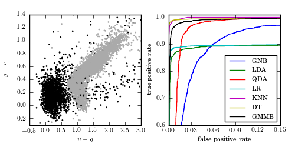

Star/Quasar Classification ROC Curves¶
Figure 9.18
The left panel shows data used in color-based photometric classification of stars and quasars. Stars are indicated by gray points, while quasars are indicated by black points. The right panel shows ROC curves for quasar identification based on u - g , g - r , r - i , and i - z colors. Labels are the same as those in Figure 9.17.
{kind=link}
GaussianNB
LDA
QDA
LogisticRegression
KNeighborsClassifier
DecisionTreeClassifier
GMMBayes
# Author: Jake VanderPlas
# License: BSD
# The figure produced by this code is published in the textbook
# "Statistics, Data Mining, and Machine Learning in Astronomy" (2013)
# For more information, see http://astroML.github.com
# To report a bug or issue, use the following forum:
# https://groups.google.com/forum/#!forum/astroml-general
import numpy as np
from matplotlib import pyplot as plt
from astroML.utils import split_samples
from sklearn.metrics import roc_curve
from sklearn.naive_bayes import GaussianNB
from sklearn.lda import LDA
from sklearn.qda import QDA
from sklearn.linear_model import LogisticRegression
from sklearn.neighbors import KNeighborsClassifier
from sklearn.tree import DecisionTreeClassifier
from astroML.classification import GMMBayes
#----------------------------------------------------------------------
# This function adjusts matplotlib settings for a uniform feel in the textbook.
# Note that with usetex=True, fonts are rendered with LaTeX. This may
# result in an error if LaTeX is not installed on your system. In that case,
# you can set usetex to False.
from astroML.plotting import setup_text_plots
setup_text_plots(fontsize=8, usetex=True)
#------------------------------------------------------------
# Fetch data and split into training and test samples
from astroML.datasets import fetch_dr7_quasar
from astroML.datasets import fetch_sdss_sspp
quasars = fetch_dr7_quasar()
stars = fetch_sdss_sspp()
# Truncate data for speed
quasars = quasars[::5]
stars = stars[::5]
# stack colors into matrix X
Nqso = len(quasars)
Nstars = len(stars)
X = np.empty((Nqso + Nstars, 4), dtype=float)
X[:Nqso, 0] = quasars['mag_u'] - quasars['mag_g']
X[:Nqso, 1] = quasars['mag_g'] - quasars['mag_r']
X[:Nqso, 2] = quasars['mag_r'] - quasars['mag_i']
X[:Nqso, 3] = quasars['mag_i'] - quasars['mag_z']
X[Nqso:, 0] = stars['upsf'] - stars['gpsf']
X[Nqso:, 1] = stars['gpsf'] - stars['rpsf']
X[Nqso:, 2] = stars['rpsf'] - stars['ipsf']
X[Nqso:, 3] = stars['ipsf'] - stars['zpsf']
y = np.zeros(Nqso + Nstars, dtype=int)
y[:Nqso] = 1
# split into training and test sets
(X_train, X_test), (y_train, y_test) = split_samples(X, y, [0.9, 0.1],
random_state=0)
#------------------------------------------------------------
# Compute fits for all the classifiers
def compute_results(*args):
names = []
probs = []
for classifier, kwargs in args:
print classifier.__name__
model = classifier(**kwargs)
model.fit(X, y)
y_prob = model.predict_proba(X_test)
names.append(classifier.__name__)
probs.append(y_prob[:, 1])
return names, probs
LRclass_weight = dict([(i, np.sum(y_train == i)) for i in (0, 1)])
names, probs = compute_results((GaussianNB, {}),
(LDA, {}),
(QDA, {}),
(LogisticRegression,
dict(class_weight=LRclass_weight)),
(KNeighborsClassifier,
dict(n_neighbors=10)),
(DecisionTreeClassifier,
dict(random_state=0, max_depth=12,
criterion='entropy')),
(GMMBayes, dict(n_components=3, min_covar=1E-5,
covariance_type='full')))
#------------------------------------------------------------
# Plot results
fig = plt.figure(figsize=(5, 2.5))
fig.subplots_adjust(left=0.1, right=0.95, bottom=0.15, top=0.9, wspace=0.25)
# First axis shows the data
ax1 = fig.add_subplot(121)
im = ax1.scatter(X_test[:, 0], X_test[:, 1], c=y_test, s=4,
linewidths=0, edgecolors='none',
cmap=plt.cm.binary)
im.set_clim(-0.5, 1)
ax1.set_xlim(-0.5, 3.0)
ax1.set_ylim(-0.3, 1.4)
ax1.set_xlabel('$u - g$')
ax1.set_ylabel('$g - r$')
labels = dict(GaussianNB='GNB',
LDA='LDA',
QDA='QDA',
KNeighborsClassifier='KNN',
DecisionTreeClassifier='DT',
GMMBayes='GMMB',
LogisticRegression='LR')
# Second axis shows the ROC curves
ax2 = fig.add_subplot(122)
for name, y_prob in zip(names, probs):
fpr, tpr, thresholds = roc_curve(y_test, y_prob)
fpr = np.concatenate([[0], fpr])
tpr = np.concatenate([[0], tpr])
ax2.plot(fpr, tpr, label=labels[name])
ax2.legend(loc=4)
ax2.set_xlabel('false positive rate')
ax2.set_ylabel('true positive rate')
ax2.set_xlim(0, 0.15)
ax2.set_ylim(0.6, 1.01)
ax2.xaxis.set_major_locator(plt.MaxNLocator(5))
plt.show()